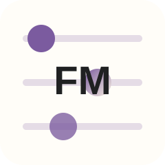
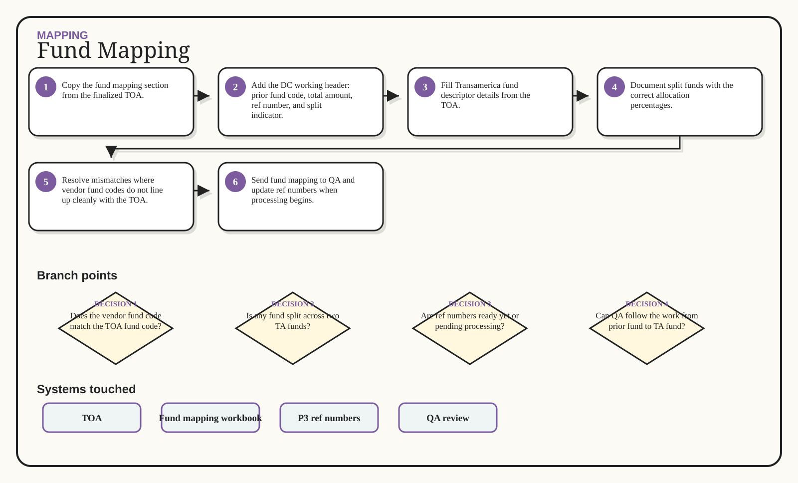

Mapping / Excalidraw flow
Fund Mapping
Turn the TOA fund map into a QA-ready purchase/ref-number file.

1Copy the fund mapping section from the finalized TOA.
2Add the DC working header: prior fund code, total amount, ref number, and split indicator.
3Fill Transamerica fund descriptor details from the TOA.
4Document split funds with the correct allocation percentages.
5Resolve mismatches where vendor fund codes do not line up cleanly with the TOA.
6Send fund mapping to QA and update ref numbers when processing begins.
Generated whiteboard
Multi-branch visual route

Branch map
Decisions that change the route
1
Does the vendor fund code match the TOA fund code?
2
Is any fund split across two TA funds?
3
Are ref numbers ready yet or pending processing?
4
Can QA follow the work from prior fund to TA fund?
Swimlane
Inputs -> action -> output
Input
Action
Output
Finalized TOA
Prior record keeper fund codes
Fund totals
Split-fund percentages
Copy the fund mapping section from the finalized TOA.
Add the DC working header: prior fund code, total amount, ref number, and split indicator.
Fill Transamerica fund descriptor details from the TOA.
Document split funds with the correct allocation percentages.
QA-ready fund mapping file
Split-fund instructions
Ref-number-ready purchase file
System boxes
Where the work happens
TOA
Fund mapping workbook
P3 ref numbers
QA review
Sticky notes
Do not miss these
Done means done